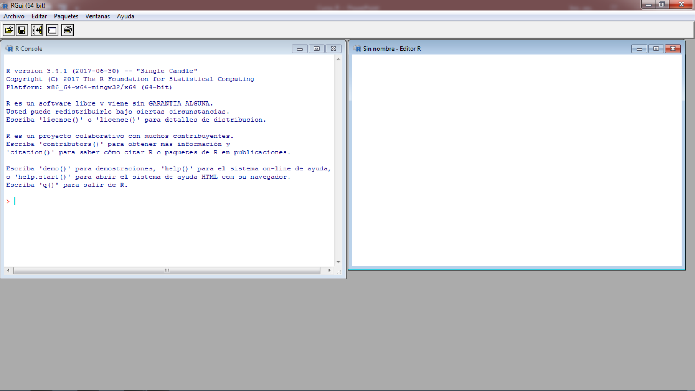
1.Introducción
¿De qué se trata?
- Lenguaje de programación creado con fines estadísticos.
- Lenguaje esencialmente funcional.
- Código abierto y distribución libre.
- Con retroalimentación de todos los usuarios.
- Un número muy alto de paquetes con fines muy diversos.
- Permite crear paqueterías propias.
Principales ventajas de utilizar código
- Cualquier análisis es reproducible.
- Todos los pasos realizados quedan guardados en el código.
- Se puede reusar el código con diferentes datos.
- Permite automatizar procesos.
Ventajas del uso de R
- Permite hacer prácticamente cualquier análisis estadístico.
- Permite realizar distintos análsis en temas de biodiversidad. Por ejemplo: curvas de acumulación de especies, modelación de distribución de especies, cálculo de variables a nivel comunitario, entre otros.
- Permite crear flujos de trabajo que se pueden utilizar con diferentes datos.
- Permite crear gráficos totalmente editables.
- No hay un enfoque de caja negra ya que se puede accesar al detalle de todas las funciones.
Ejemplos de análisis en R
- Índices de diversidad de especies.
- Ordenación de especies.
- Curvas de acumulación de especies.
- Modelación de nicho ecológico.
- Pruebas estadísticas.
- Limpieza y resumen de datos.
- Manejo de información espacial (vectorial y ráster).
- Uso de algoritmos de aprendizaje automatizado y profundo.
- Cálculo de biomasa por parcela.
- Análisis de diversidad de audio.
Ejemplos
 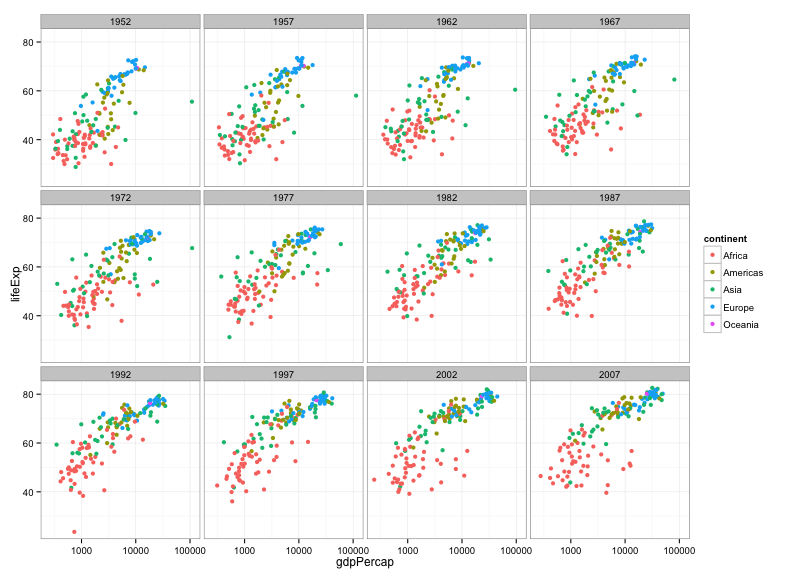 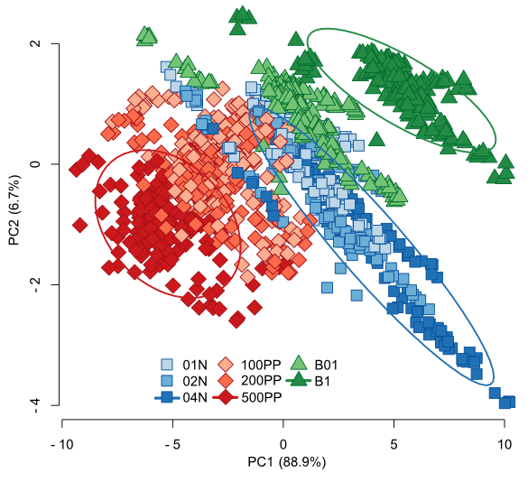 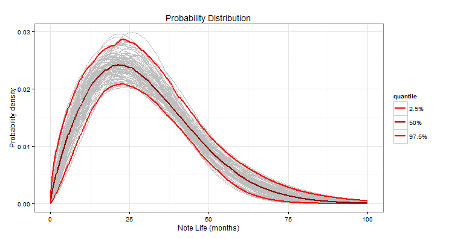 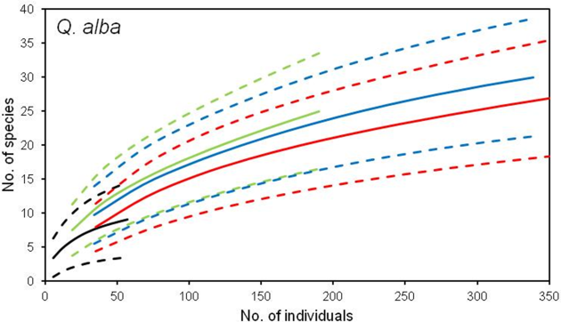 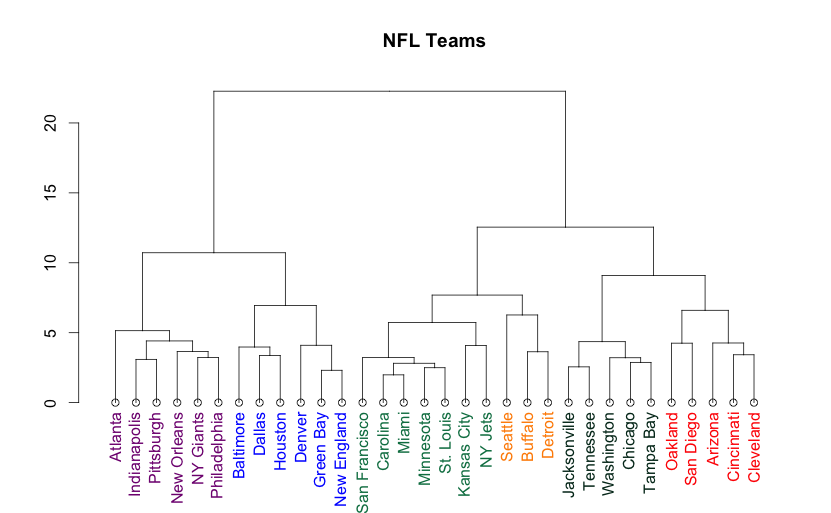 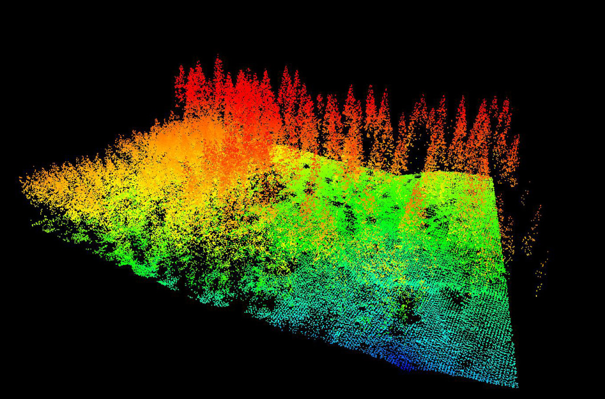 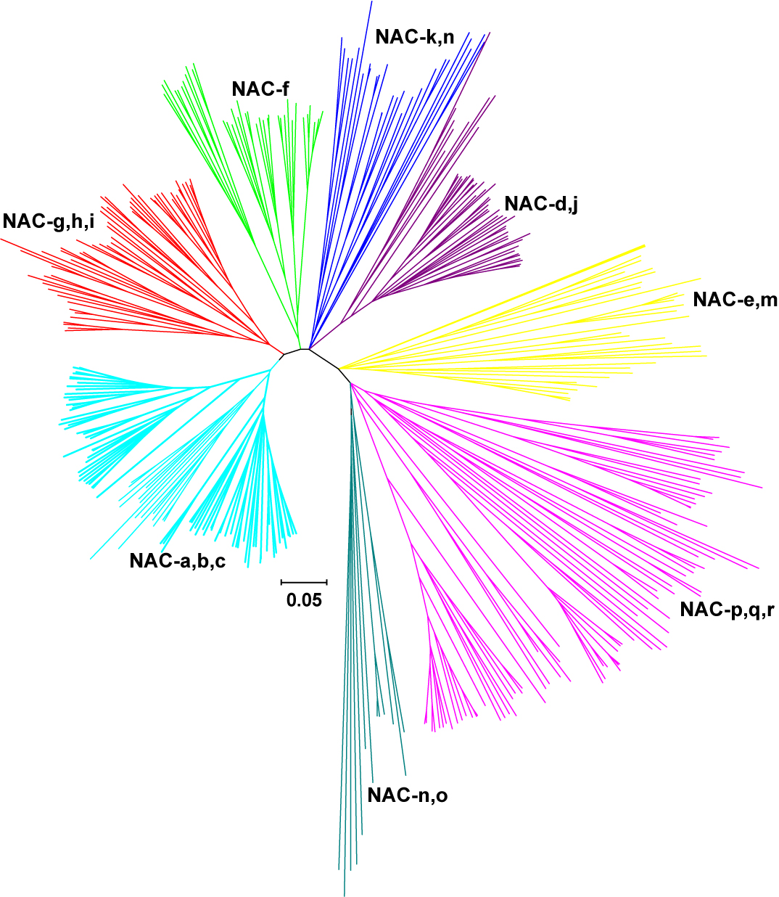 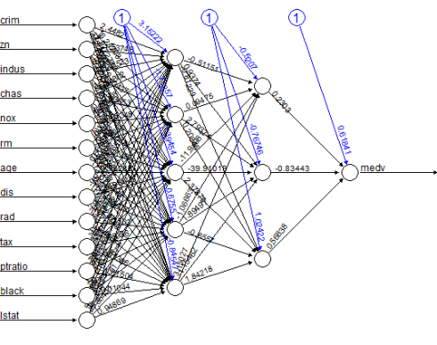 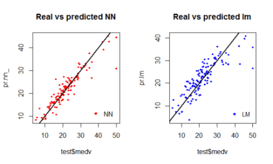 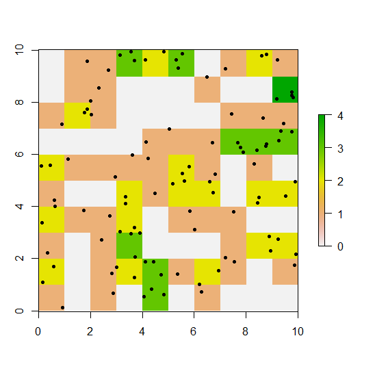
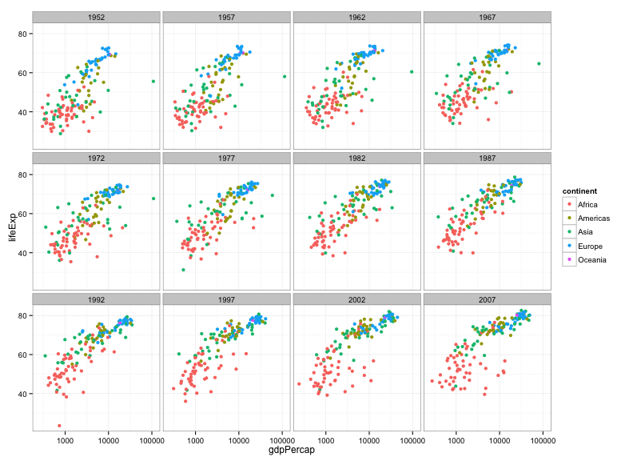 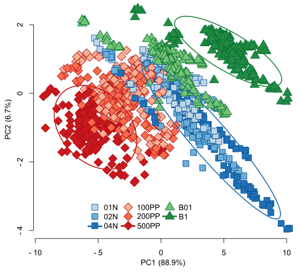 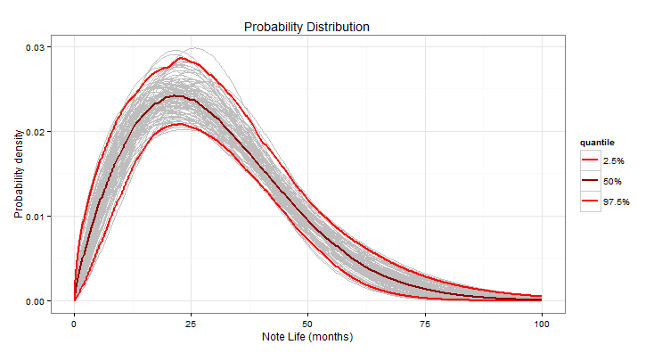 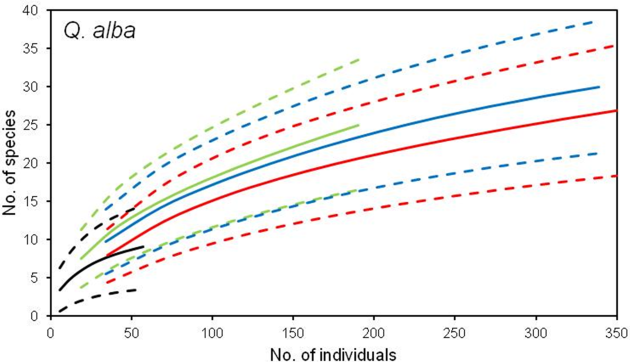 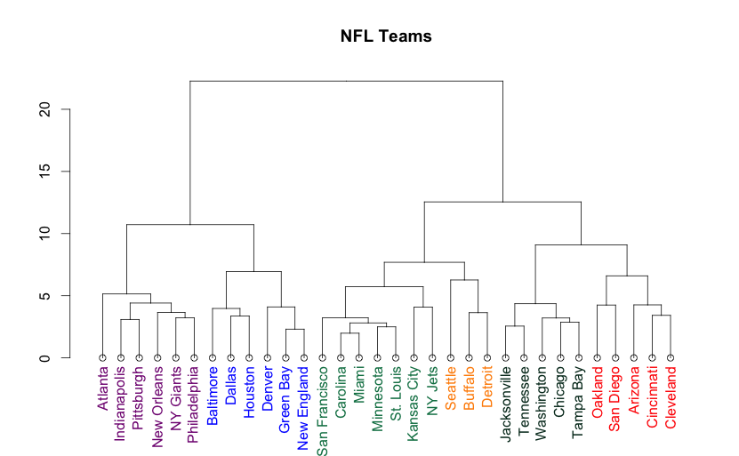 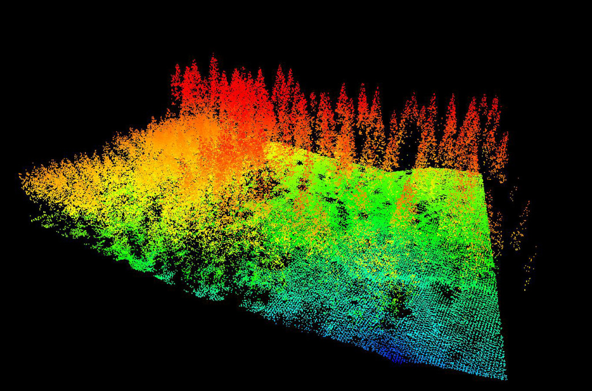 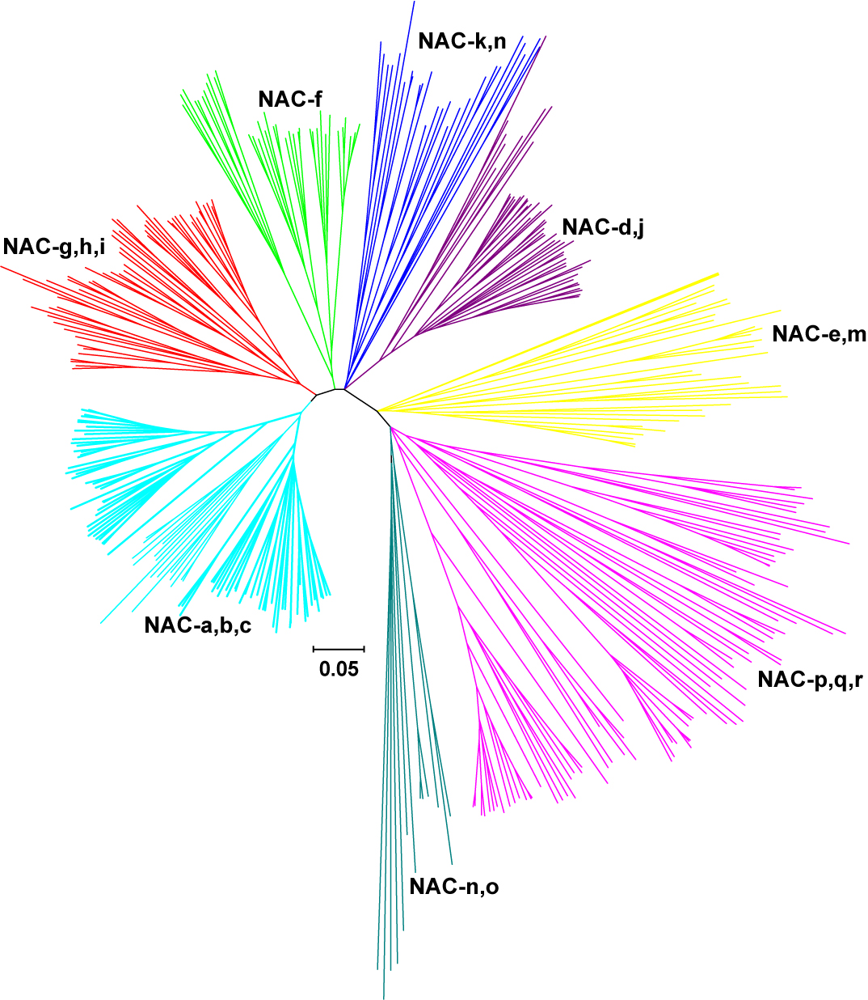 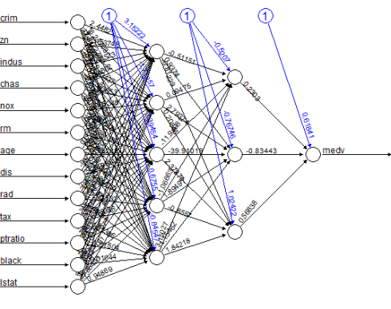 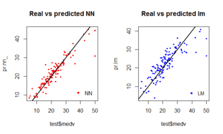 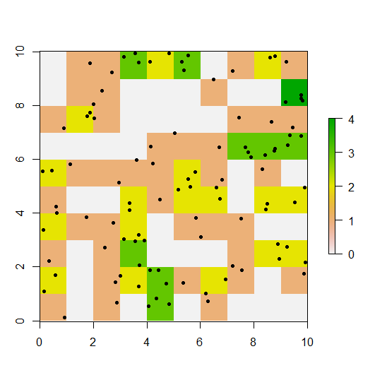
Otras cosas para las que se puede usar R
- Escribir y automatizar manuscritos y reportes (Rmarkdown y knitr).
- Creación de presentaciones (xaringan).
- Creación de apps (shiny).
- Conectarse a bases de datos o APIs (RMariaDB, httr2, jsonlite).
- Manejo de archivos (tidyverse).
- Creación de mapas (tmap).
- Creación de diagramas (DiagrammeR).
- Manejo de imágenes y creación de animaciones (magick).
- Creación de mapas 3D (rayvista, rayshader).
- Creación de mapas interactivos (leaflet).
- Uso de algoritmos de aprendizaje automatizado (tidymodels).
- Uso de algoritmos de aprendizaje profundo (keras).
- Obtener información de páginas web (rvest).
- Cálculo de métricas del paisaje (landscapemetrics, makurhini).
- Manejo de información en formato raster (terra, stars).
- Manejo de información en formato vector (sf).
- Manejo de información de nube de puntos (lidR).
- Análisis de textos (pdftools, tm).
- Análisis de audio (soundecology, seewave, tuneR).
- Entre muchos otros.
¿Cómo obtenerlo?
- Ingresar a: https://cran.r-project.org/
- Descargar la versión para el sistema operativo que se desea.
Instalación
- Podemos dejar todo tal cual por default.
Sugerencia para trabajar: RStudio
- Entrar al sitio: https://www.rstudio.com/
- Descargar la versión para el sistema operativo que se desea
Pantalla principal de R
Instalar RStudio
- Podemos dejar todo tal cual por default.
Pantalla principal de RStudio
Sugerencia para trabajar: RStudio
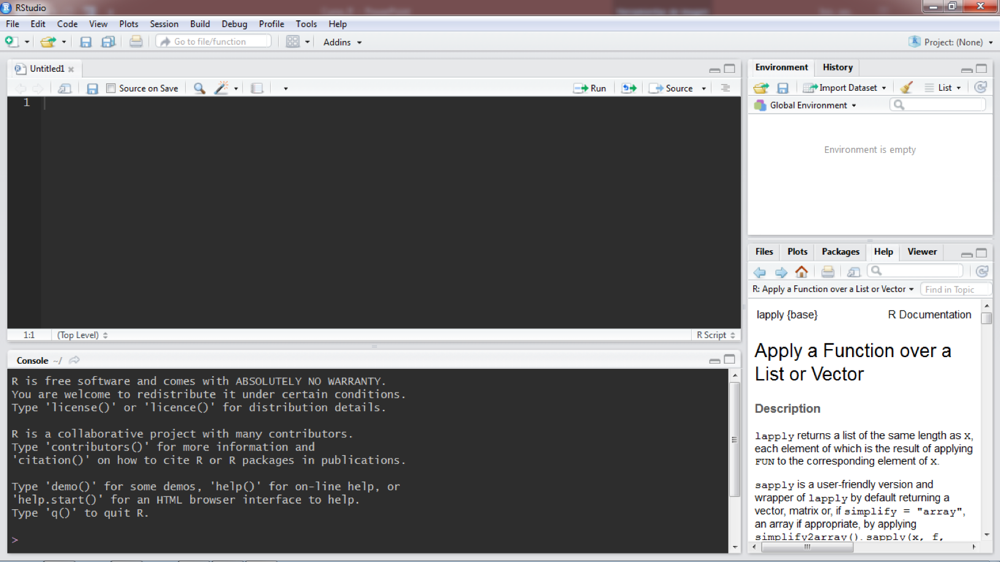
¿Qué es RStudio?
- Integrated Development Environment (IDE) o un entorno de desarrollo integrado para R.
- Es un entorno para desarrollar proyectos con R.
- Tiene varias ventajas que facilitan el trabajo con R:
- Organización por proyectos (cambio de directorio de trabajo automático).
- Inspección de objetos en el espacio de trabajo.
- Ventana integrada de gráficos y ayuda.
- Correr por líneas o selección con ctrl + R, ctrl + enter …
- Resultar sintáxis de R.
- Manejo de proyectos, que incluyen el espacio de trabajo (.wd), el historial (.h) y directorio de trabajo (setwd).
Elementos Rstudio
Consola
1[1] 11+1[1] 2"1"[1] "1""1" + "1"Error in "1" + "1": argumento no-numérico para operador binario1>0[1] TRUE1<0[1] FALSEConceptos básicos en R
Sintaxis básica:
- Para hacer comentarios se usa “#”.
- Números escritos como tal.
- Caracteres van entre “” ó ’ ’.
- Crear objetos con: nombre<-contenido, contenido->nombre, nombre=contenido.
- Nombres de objetos sin espacios.
- A excepción de los nombres, los espacios no influyen en la sintaxis.
- Lenguaje sensible a mayúsculas y minúsculas
- Funciones siempre llevan () aunque no hayan argumentos dentro.
Otras reglas:
- Se sugiere nombrar objetos con más de una palabra con un _ intermedio.
- Las tabulaciones se pueden usar para leer más fácil el código.
- Tabulación automática en Rstudio ctrl+I.
Tipos de variables
- Numérica: 1, 2, 3
- Caracter: “cadenas de caracteres”
- Factores: “cadenas de caracteres cifrados como factores”
Operadores - Lógicos: TRUE, FALSE, T, F. Tipos de operadores - Lógicos: &, | - Relacionales: >, <, >=, <=, ==, != - Matemáticos: + , -, *, /, ^, sqrt, %% (uso de paréntesis)
Las operaciones matemáticas usualmente siguen el siguiente orden:
- Paréntesis.
- Exponenciales y raíces.
- Divisiones y multiplicaciones.
- Sumas y restas.
1+2[1] 3 1000/99-554/111+ 63[1] 68.11002 1000/(99-554)/(111+ 63)[1] -0.01263105 1+"2"Error in 1 + "2": argumento no-numérico para operador binario "1"+"2"Error in "1" + "2": argumento no-numérico para operador binario 3>1[1] TRUE 1&3>2[1] TRUE 1>2&3>2[1] FALSE 1>2|3>2[1] TRUE 4==4[1] TRUE 4==8[1] FALSE 2>=2[1] TRUE 6<=7[1] TRUE 4!=5[1] TRUE 10^3[1] 1000 sqrt(1000)[1] 31.62278 ((5*2)+ 12)>5[1] TRUE ((5*50)/4>10|54<100)[1] TRUEModulo
- x %% y
- Da el residuo (número entero) de un número x entre algún múltiplo de y
- No da el residuo después del punto decimal.
4%%2[1] 0 5%%2[1] 1 5%%3[1] 2 9%%5[1] 4Diferencia entre factor y variables de tipo caracter: el factor se puede interpretar como una variable categórica que se puede utilizar en algunos modelos (p.ej., regresión lineal), mientras que un caracter solo indica un nombre o una clase.
Otros conceptos básicos
Espacio de trabajo (Workspace)
- Espacio donde vamos a trabajar.
- Se puede cambiar (avanzado).
- Todos los objetos que se usen en una sesión tienen que estar guardados en el actual espacio de trabajo para poder ser llamados.
- Esto implica que todos los objetos deben ser primero declarados para ser utilizados.
Ver en la pestaña superior derecha de Rstudio -> Environment.
a <- 1Funciones útiles
- class()
num1<-1
char1<-"1"
bol1<-TRUE
class(num1)[1] "numeric"class(char1)[1] "character"class(bol1)[1] "logical"Creando objetos o variables
- Los objetos una vez creados quedan disponibles en el espacio de trabajo.
- Se pueden crear mediante ->, <-, =.
- Todos los objetos que se usen en una sesión tienen que estar guardados en el actual espacio de trabajo para poder ser llamados.
- Esto implica que todos los objetos deben ser primero declarados para ser utilizados.
num_1Error in eval(expr, envir, enclos): objeto 'num_1' no encontradonum_1 <- 1
num_1[1] 1Num_1Error in eval(expr, envir, enclos): objeto 'Num_1' no encontradonum1 <- 1
num2 <- 2
num1 + num2[1] 3char1 <- "3"
num1 + char1Error in num1 + char1: argumento no-numérico para operador binarioLos objetos también pueden ser más cosas:
- Funciones
- Gráficos
- Resultados de algún método
- Hojas de datos
- Imágenes
- Información en formato vectorial
- Puntos
- Cualquier cosa
Crear los siguientes tipos de objetos
- usar cualquier nombre excepto c (es una función).
- mi_string <- “Este es una cadena de caracteres o string”.
- mi_num<-80*95+ 63/87.
Tipos de objetos
Objetos básicos simples
- Variables sencillas
- 1
- Vectores
- c(1, 2, 3, 4, 5, 6, 7, 8, 9, 10… , n).
- Data frames
- Conjunto de vectores acomodados por columnas o renglones.
- Matrices
- Como data frames pero solo permiten un tipo de variable en sus entradas (numérica o caracter).
- Listas
- Conjunto de data frames o matrices o vectores o variables.
Funciones útiles v2
- Para vectores
- length()
- Para data frames y matrices:
- nrow(), ncol()
- dim()
- Para listas
- length()
- Para todas ellas:
- str()
Para crear cada uno de esos objetos, se crean con una función determinada
- Vector
- Objeto <-c (…)
- Data frame
- Objeto <- data.frame(c(…), c(…),…)
- Matriz
- Objeto <- matrix(c(…), ncol=x, nrow=y, byrow = FALSE)
- Lista
- Objeto <- list(c(), c()); as.list
Crear cada uno de los objetos anteriores:
- vector1 <- c(1,2,3,4)
- df1 <- data.frame(a = vector1, b = vector1)
- mat1 <- matrix(vector1, ncol=2, nrow=2, byrow = TRUE)
- lista1 <- list(vector1, vector1)
#Vector
vector1<-c(1,2,3,4)
vector1[1] 1 2 3 4#Data frame
df1<-data.frame(a = vector1, b = vector1)
df1 a b
1 1 1
2 2 2
3 3 3
4 4 4#Matriz
mat1<-matrix(vector1, ncol=2, nrow=2, byrow = TRUE)
mat1 [,1] [,2]
[1,] 1 2
[2,] 3 4#Lista
lista1<-list(vector1, vector1)
lista1[[1]]
[1] 1 2 3 4
[[2]]
[1] 1 2 3 4Ver su estructura Analizar la longitud, número de columnas, renglones y dimensiones
Para accesar cada elemento
- Vector
- Vec1[entrada] (solamente un número porque solo tiene una dimensión).
- Matriz o Data frame
- Df1[entrada_fila, entrada_columna] (dos números porque tienen dos dimensiones).
- Lista
- Lista[[entrada de lista]][entrada_de_vector]
- Lista[[entrada de lista]][entrada_de_fila, entrada_de_columna]
#Vector
vector1[1][1] 1 vector1[2][1] 2#Data frame
df1[1,] a b
1 1 1#Data frame
df1[,1] [1] 1 2 3 4df1[1,4]NULLdf1[2,1][1] 2df1[3,2][1] 3#Matriz
mat1[1,1]<-8
mat1[1,2]<-6
mat1 [,1] [,2]
[1,] 8 6
[2,] 3 4 mat1[2,]<-7
mat1 [,1] [,2]
[1,] 8 6
[2,] 7 7#Lista
lista1[[1]][1]<-"Hey"
lista1[[2]][1]<-"Que"
lista1[[1]]
[1] "Hey" "2" "3" "4"
[[2]]
[1] "Que" "2" "3" "4" lista1[[1]]<-mat1
lista1[[2]]<-df1
lista1[[1]]
[,1] [,2]
[1,] 8 6
[2,] 7 7
[[2]]
a b
1 1 1
2 2 2
3 3 3
4 4 4Nombrar elementos
names(vector1)<-c("Obs1","Obs2","Obs3","Obs4")
vector1Obs1 Obs2 Obs3 Obs4
1 2 3 4 colnames(df1)<-c("Col1","Col2")
rownames(df1)<-c("muestra1","muestra2","muestra3","muestra4")
df1 Col1 Col2
muestra1 1 1
muestra2 2 2
muestra3 3 3
muestra4 4 4colnames(mat1)<-c("C1","C2")
rownames(mat1)<-c("m1","m2")
mat1 C1 C2
m1 8 6
m2 7 7names(lista1)<-c("lista_A","lista_B")
lista1$lista_A
[,1] [,2]
[1,] 8 6
[2,] 7 7
$lista_B
a b
1 1 1
2 2 2
3 3 3
4 4 4Notar el : y su uso, al igual que la asignación de nombre rápida
vector_a <- (1:4)
vector_b <- (5:8)
datos_nums<-data.frame(Num1=vector_a,Num2=vector_b)Otra forma de accesar entradas:
- Vector
- vector[“nombre_de_la_entrada”]
- DF
- df$nombre_de_la_columna[renglón_de_entrada]
- Matriz
- mat[nombre_del_renglón,nombre_de_la_columna]
- Lista
- lista$nombre_de_entrada_lista[renglón, columna]
vector1["Obs1"]Obs1
1 df1$Col1[1] 1 2 3 4df1$Col2[1] 1 2 3 4mat1[,"C1"]m1 m2
8 7 mat1["m1",]C1 C2
8 6 lista1$lista_A [,1] [,2]
[1,] 8 6
[2,] 7 7lista1$lista_A[1,1][1] 8lista1$lista_B[,2][1] 1 2 3 4Sumar los vectores anteriores (vector_a y vector_b), usando el objeto datos_nums mediante el método $. Hacer lo mismo con el objeto lista1.
datos_nums$Num1 + datos_nums$Num2[1] 6 8 10 12lista1$lista_A + lista1$lista_B a b
1 9 9
2 9 9
3 9 9
4 11 11Otra forma de acceder mediante los nombres de las listas
datos_nums$Num1 + datos_nums$Num2[1] 6 8 10 12lista1[["lista_A"]] + lista1[["lista_B"]] a b
1 9 9
2 9 9
3 9 9
4 11 11Resumen:
- El operador
$se puede usar para acceder a elementos nombrados de listas y data.frame. - En todos los objetos se puede acceder a las distintas entradas con la notación de corchetes (
[]). Solo recordar que los vectores solo tienen una dimensión[1], data.frame y matrices, dos dimensiones[1,2]y listas pueden tener n dimensiones (se accede con doble corchete a cada entrada de la lista[[1]]). - Listas y vectores permiten acceder a objetos mediante la notación
[["nombre"]].
Data.frame o matrix
- Más recomendable usar data.frames para mezclar tipos de variables.
- Casi todos los datos se acomodan mejor en un data.frame.
- Cuando se necesite hacer una conversión a matrix para utilizar alguna función o un caso similar, hacer lo siguiente:
- Dejar las entradas numéricas en las entradas de la matriz.
- Los caracteres ponerlos como nombres de columnas y renglones.
- Si esto no tiene sentido, entonces usar data.frame.
Factores
Los factores son objetos de tipo caractér pero que pueden tener un significado. Por ejemplo: un tipo de vegetación, la clave de un sitio de muestreo, una especie, etc.
df1$Col1 <- c("Sp1", "Sp2", "Sp3", "Sp4")
colnames(df1)[1] <- "Especie"
df1 Especie Col2
muestra1 Sp1 1
muestra2 Sp2 2
muestra3 Sp3 3
muestra4 Sp4 4Para convertir entre tipos de variables y objetos tenemos las funciones de la familia as: as.numeric(), as.character(), as.factor(), as.data.frame(), as.matrix().
Diferencia entre Factor y Caracter
- El factor es un caracter que tiene un significado para los datos (p.ej. variable cualitativa que explica otra variable).
- Los factores se mantienen aunque recortes la hoja de datos.
- p.ej. tomas algunos datos de tu hoja de datos, sin embargo dentro de los niveles siempre va a aparecer la totalidad de los niveles.
- La conversión entre factor y caracter siempre respeta los caracteres o factores deseados.
df1$Especie <- as.factor(df1$Especie)Ver en el ambiente cómo cambió la codificación
Ver qué pasa si tomamos parte de los datos
df2 <- df1[1:3,]
df2$Especie[1] Sp1 Sp2 Sp3
Levels: Sp1 Sp2 Sp3 Sp4Para evitar mantener niveles de factor que ya no queremos, convertir a caracter y regresar a factor. Aquí el orden sí importa.
df1$Especie <- as.character(df1$Especie)
df2 <- df1[1:3,]
df2$Especie <- as.factor(df2$Especie)
df2$Especie[1] Sp1 Sp2 Sp3
Levels: Sp1 Sp2 Sp3Ayuda de R (para funciones)
- help(función)
- ??función
La página de ayuda de las funciones normalmente se ve así:
- Nombre_de_la_función(argumento1,argumento2,argumento3…)
- Descripción
- Uso
- Ejemplos
- Referencias
- En la ayuda vienen qué tipo de variables tiene que ser cada argumento
- Viene la explicación del método
- Detalles más específicos de la función
- En que paquete viene (esto lo vemos después)
- {vegan}
help("mean")Más funciones útiles
- rep()
- seq()
- número:número
- c()
- cbind()
- rbind()
- unlist()
Funciones propias
Podemos poner muchos argumentos dentro de la función Se pueden llamar funciones dentro de otras funciones, siempre y cuando se carguen en el espacio de trabajo.
function(x) { nuestra función return(el resultado que queremos que regrese #la función) }
mi_func1<-function(x)
{
resul<-x+ 2
return(resul)
}
mi_func1(8)[1] 10Crear una función (mi_funcion) que tome como argumento un número (x), le sume la mitad de sí mismo y regrese ese nuevo número.
mi_func1<-function(x)
{
resul<-x+ (x/2)
return(resul)
}
mi_func1(8)[1] 12Estructuras de control de flujo
Condicional
- Permiten evaluar la condición deseada.
- Permiten seguir un camino si se cumple la condición y otro en caso de que no suceda esto.
#if(condicion)
# {
# si se cumple la condición se hace esto
# }else{ #es opcinoal el else, se puede poner o no
# si no, se hace esto
# }
x<-20
if(x>=5){
print("El número es mayor o igual a 5")
}else{
print("El número es menor a 5")
}[1] "El número es mayor o igual a 5"Crear una condicional sobre una variable x de caracter, y definir dos mensajes dependiendo si se cumple o no la variable. * p.ej. chara<-“A”, evaluar si es “A” o no lo es. * imprimir el chara es A o B
chara<-"A"
if(chara=="A"){
print("chara es A")
}else{
print("chara no es A")
}[1] "chara es A"Ciclos
- Sirven para repetir una misma operación o procedimiento sobre subsecuentes entradas
- Permite ahorrar mucho tiempo
for
#for(definir variable e intervalo de valores que va a tomar)
# {
# esto se hace de manera cíclica cambiando el valor de la #variable en el intervalo de datos que se le indicó
# }
resul<-vector(length=3)
resul[1] FALSE FALSE FALSEfor(i in 1:3)
{
resul[i]<-i
}
resul[1] 1 2 3resul <- 1:3
for(x in resul)
{
print(x)
}[1] 1
[1] 2
[1] 3resul[1] 1 2 3Crear ciclo en el cual a un vector de números (1 * 10) se le multiplique 4.
sum_vec<-seq(1,10,1)
for(i in 1:length(sum_vec))
{
sum_vec[i]<-sum_vec[i]*4
}
sum_vec [1] 4 8 12 16 20 24 28 32 36 40while
- Permite continuar un ciclo mientras se cumpla una condición.
x <- 1
while(x <=10){
x <- x+1
print(x)
}[1] 2
[1] 3
[1] 4
[1] 5
[1] 6
[1] 7
[1] 8
[1] 9
[1] 10
[1] 11apply
Funciones para hacer ciclos sobre objetos.
sapply. Permite hacer ciclos, siempre retornando un objeto de tipo vector. lapply. Permite hacer ciclos, siempre retornando un objeto de tipo lista. apply. Permite hacer ciclos sobre filas o columnas, siempre retorna un objeto de tipo matriz. mapply. Permite hacer ciclos con múltiples argumentos.
x <- seq(1,20,2)
mat <- matrix(x, nrow = 5)
sapply(x, FUN = function(x) x + 1) [1] 2 4 6 8 10 12 14 16 18 20lapply(x, FUN = function(x) x + 1)[[1]]
[1] 2
[[2]]
[1] 4
[[3]]
[1] 6
[[4]]
[1] 8
[[5]]
[1] 10
[[6]]
[1] 12
[[7]]
[1] 14
[[8]]
[1] 16
[[9]]
[1] 18
[[10]]
[1] 20apply(mat, MARGIN = 2, FUN = function(x) sum(x))[1] 25 75mi_func <- function(x, y){
return(sum(x,y))
}
seq1 <- 1:10
seq2 <- 21:30
mapply(mi_func, seq1, seq2) [1] 22 24 26 28 30 32 34 36 38 40Recomendaciones para hacer funciones propias
- Utilizar variables, no constantes
- Esto asegura que se puedan utilizar con cualquier dato.
- Por lo tanto las hacen funciones útiles en el futuro
Otras funciones útiles
- which(condición)
- is.na(datos)
- ifelse(condición, si se cumple haz esto, si no, haz esto)
- apply(datos,por columna o por renglón, función a aplicar)
- sapply()
- lapply()
Lo que vimos en la clase
- Cualquier variable, función, dato, gráfico, etc. cargado en el espacio de trabajo es un objeto.
- Funciones requieren de ciertos argumentos con ciertas propiedades para funcionar bien.
- Todo paréntesis debe quedar cerrado, si no aparecen errores muy extraños.
- {} con para marcar funciones que contienen una serie de operaciones.